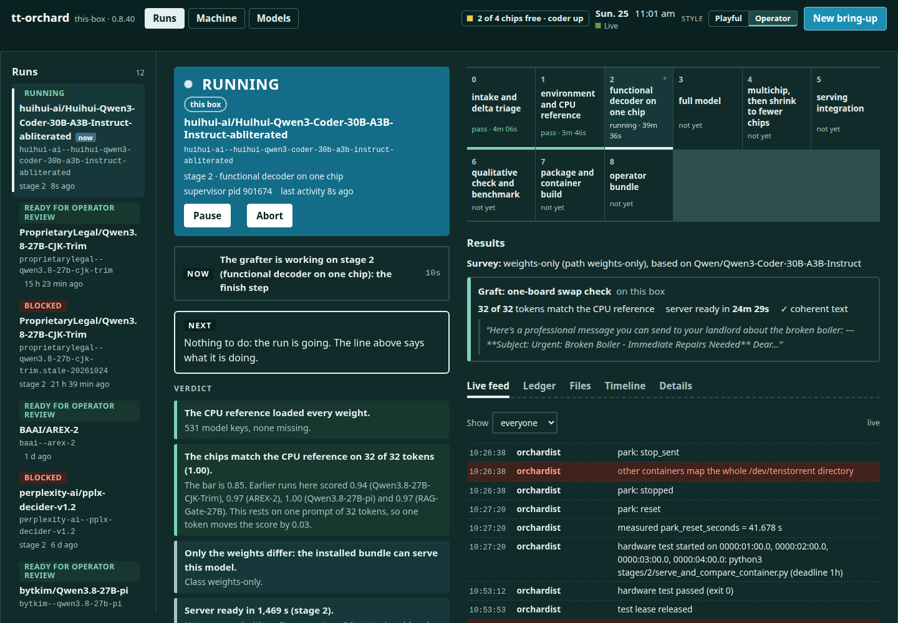

A model lands on Hugging Face. Watch it come up.
Give tt-orchard a model id. It works out how the model differs from one that already runs on Tenstorrent chips, brings it up on the board, checks the output against a CPU, and stops at a bundle for a person to review. Below is a real run, replayed from its ledger.
Stages
The four chips
The run is ProprietaryLegal/Qwen3.8-27B-CJK-Trim, a Qwen3.8-27B with 66,533 vocabulary rows removed. The replay is its own ledger, 47 minutes of it, with host paths removed. Nothing here is mocked. The 4-chip test failed at startup and was retried after a reset: that is in the log too.
Twenty-nine catalog models, sorted from their headers
Stage 0 compares a model's config and weight headers with the nearest model that already runs. It downloads no weights. Here it is run on 29 models from the tt-model-manager catalog, against Qwen3.8-27B. Every one of these already runs on Tenstorrent chips as a hand-built package, so full-port here means only that the model differs from Qwen3.8-27B in more than its weights. Select a tile to see the first reason stage 0 gave.
Pick a run. See what it is doing and what to do next.
tt-orchard ui is a page on the machine itself. These are screenshots of the real page, taken against real runs: one running as this site was written, one finished, one blocked. Two styles: the farm view and the operator view.

47 minutes, half of it in the chip tests
The same run, by stage. About half of it is stage 4, the two-chip and four-chip serve-and-compare tests, which build a tensor cache on first boot. Stages that do not apply to a weights-only model are skipped, and the ledger says why.
A fine-tune and its base, six benchmarks
bytkim/Qwen3.8-27B-pi against Qwen/Qwen3.8-27B: same bundle, same server, same prompts, 9.8 hours of chip time. Bars are the fraction of items passed.
Real stops from real runs
An unattended run ends in blocked, releases the chips and writes what it tried. The text in each box is quoted from a real run on this machine.
hf_home: needs 202 GB, 116 GB free
From a preflight, before anything downloaded. The block now also lists the largest models and caches on the short disk.
watchdog: 3 identical responses in a row (18830 input, 186 output tokens)
The agent wrote the same file three times and the watchdog stopped it. The cause was a missing 2-chip package; stage 4 now reports that before any agent runs.
The reference's own check failed, but reference.json says pass (evidence/summary.json says fail). 851 of 851 model keys were not found in the checkpoint.
An agent wrote a passing reference over a failed check. The gate now compares the two files, and the page shows the mismatch first, in red.
Needs new model code: class unknown, path full-port. An unattended run stops here; a full port is a person's decision.
When the harness meets an architecture it has not seen, it stops, releases the chips, and says what it found.
Packages made from runs, public on Hugging Face
Each one was staged by the harness and booted on chips before upload. The package gate checks every card against the files the package ships. All six were also pulled from the Hub on a clean install and booted.
| Package | Base | What was checked |
|---|---|---|
| episod/clef-p300 | Qwen3.8-27B + task head | 31 of 32 tokens equal to the CPU; head agrees on 15 of 16 questions; pulled and booted from the Hub |
| episod/rag-gate-27b-p300 | Qwen3.8-27B | Gate accuracy 0.930 on 200 items; pulled and booted from the Hub |
| episod/qwen3.8-27b-pi-p300 | Qwen3.8-27B | Full benchmark against its base (above); pulled and booted from the Hub |
| episod/arex-2-p300 | Qwen3.8-27B, no drafter head | Pulled and booted from the Hub; a by-hand graft kept the drafter on |
| episod/hemmingway-1-p300 | Qwen3.8-27B | Pulled and booted from the Hub; 2-chip and 1-chip |
| episod/openthai2.0-qwen3.8-27b-p300 | Qwen3.8-27B | Pulled and booted from the Hub; 2-chip and 1-chip |
Bring-ups with nobody at the keyboard
The aim is a run that goes from a model id to a reviewed bundle with nobody touching the machine. Today an unattended run already does the checking itself, stops with a stated reason when it cannot go on, releases the chips and writes down what it tried. Each stop above shows what that looks like.
Each claim and its evidence are in docs/proofs.md.
Install
On a QuietBox 2 the setup script (run it after --check) checks each prerequisite, installs tt-gozer (the chip lease manager) when it is missing, and writes the machine config. It never resets a chip, takes a lease or publishes anything.